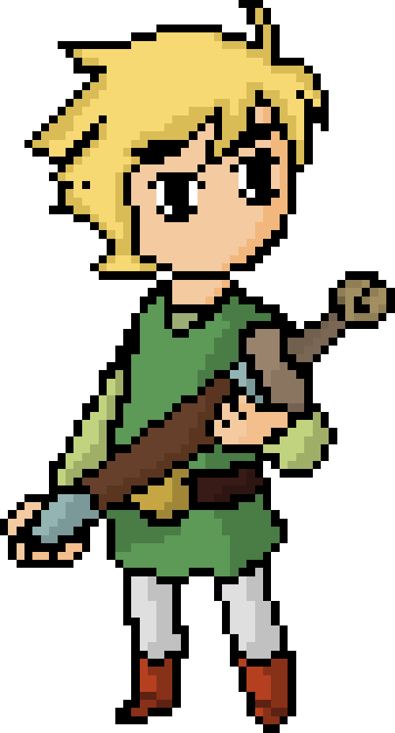
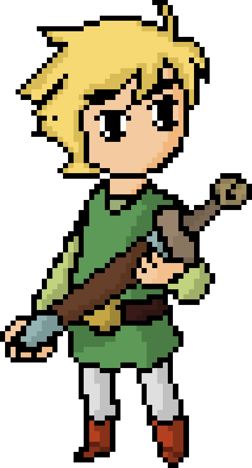

Era uma vez um pequeno garoto muito amigo do Sol
Ele conversava muito com o Sol em muitas de suas viagens, porém um dia...
Ao acordar percebeu que o Sol não brilhava mais, questionou-se o motivo disso, e ao refletir sobre lembrou-se da rivalidade do Sol com a sua irmã adotiva a Lua...(melhor falar sobre ela baixinho pois ela pode estar escutando).
 

Então ao ver a situação em que o mundo se encontrava, ele partiu mais rápido que o vento e embarcou numa jornada que o levaria para perigos e lugares além de sua imaginação...
Após alguns dias explorando a floresta de Doriath(que ainda possui um pouco da luz do sol) em busca da maçã, Eärandel encontra o garoto dos três troncos ou SkullKid como é conhecido nas redondezas.Seria ele o guardião da maçã?
Ao que parece, sim ele é o guardião.O garoto parece estar disposto a entregar a maçã com uma pequena condição...
Você deve responder uma charada, e a charada é...
Como a morte, não tenho calor
Vivo, mas sem respirar
Sem sede, sempre a beber
Encouraçado, sem tilintar
Eärandel pensou e pensou, mas de nada adiantou mas quando estava prestes a desistir, olhou um peixe que saiu do lago próximo ao garoto
No momento em que peixe caiu no pé do garoto, ele levou um susto e falou
“Ugh!”, disse ele, “é gelado e viscoso!” então Eärandel adivinhou. “Peixe! Peixe!”, gritou. “É um peixe!”

Você encontrou a maçã dourada!Use ela para ativar o portal adiante , quem sabe o que há lá dentro...

Ao entrar na caverna Eärendel da de cara com dois sujeitinhos peculiares, ao que parece são dois magos, dois primos em setimo grau, os magos Medvih e Mádvih.Aparentemente estavam discutindo sobre como fazer os feijões crescerem mais rápidos se utilizarem cocô de um Troll da floresta parda...
De repente o mago Medvih falou:
"Que sujeito curioso esse que adentrou em nossa caverna Madvih meu irmão!
Então Madvih também falou:
De fato, o rapaz é muito corajoso devo parabenizá-lo, porém não há tempo para enaltece-lo, o Sol necessita de nossa ajuda lembre-se disto, então certamente será ele que vai entrar no portal da água, viajar para o reino dos Eternos e derrotar aquele cara que guarda o poderoso elixir, engraçado não to me lembrando do nome dele.
Enfim, não há mais tempo para conversa, vá, nem tente entrar no outro portal, somente há tristeza naquele lugar.Você tem o poder de muda-lo mas não agora...
ENTRE NO PORTAL AZUL AGORA GAROTO, O FUTURO DO MUNDO DEPENDE DE VOCÊ!


Você chegou na terra dos Eternos, este na sua frente é Ornstein O Assassino de Dragões, ele guarda o elixir...
Use a Anglachel(não a tem?lascou pra você, se tentar atacar ele, provavel que ele te transforme em um pedaço de chuchu, pelo menos é aquilo que me disseram) para derrotar Ornstein!e colete o elixir que ele irá soltar o mais rápido possível
Você derrotou Ornstein e obteve o elixir dos Eternos, agora volte para a caverna e entre no outro portal para podermos acabar com isso de uma vez por todas

Você falhou e foi morto por Ornstein, da próxima vez use equipamentos melhores, se é que me entende.Sorte é para os fracos!

Então que lugar é esse?Eärendel pensou consigo mesmo:"Que lugar estranho..."
"Uma feiticeira, quem será ela?"
Então em sua mente veio uma lembraça de sua infancia, em que seus pais contavam a história de Galadriel uma bela e poderosa feiticeira, que foi corrompida pela Lua e trancafiada na caverna do Ginnungagap
A caverna onde os primeiros anões surgiram, e eles forjaram a Anglachel a única lâmina capaz de ferir o temido Ornstein.
Agora, a feiticeira acordou e ela guarda a espada, lute contra a poderosa Maria para ter a posse da lendária Anglachel.


????????
Que lugar é esse?Aquele é...não pode ser...O lendário Artorias, o que ele estaria fazendo num lugar como esse?
Logo ele que era o melhor amigo de Ornstein, por que ele teria se auto-exilado em um lugar como esse?
Acredito que tem alguma relação com o fato de Ornstein ter sido corrompido e ter ficado malvado e então para não se ver obrigado a matar seu melhor amigo, Artorias se exilou nesse reino paralelo, e todo dia entoa um lamento para seu amigo perdido...
No momento em que Eä pensava, Artorias respondeu:
Garoto, devo elogiar sua coragem em vir aqui, o que deseja?minha loba Sif me contou que você possui um coração puro e repleto de compaixão, isso me alegra, pois vivo neste exilio e tudo que me rodeia é tristeza.E mais nada...
Não se passa um minuto sem que eu me lembre de Ornstein e tudo em que ele fez e se transformou, mas vejo que você pode me libertar desse fardo.
Ele me soltou uma maldição, em que eu jamais poderei ser morto ou me matar, porém ele falou que somente um ser de um coração extremamente bondoso poderia me libertar e deixar eu ver meus antepassados
Por favor liberte-me dessa vida dolorosa, deixo a você meu anel, talvez seja útil contra Ornstein
E a você Sif, cuide-se, sabes que és a melhor amiga que já tive e sempre estará em minha mente e meu coração, adeus minha querida
Que o tempo a traga de volta para mim
(liberte Artorias de seu fardo(clique nele))
Agora é a hora de acabar de vez com isso, você vai pagar pelo que fez com o Sol!
Você me salvou EÄ obrigado, devo a você minha gratidão eterna e lembre-se disso até mesmo nos lugares mais escuros, agora batizarei uma estrela em seu nome, que a luz de Eärandel ilumine o mundo.
Você cometeu um grave erro garoto em não ter trago o elixir AHAHAH, sua curiosidade custou a vida de seu amigo Sol AHAHAHAHA